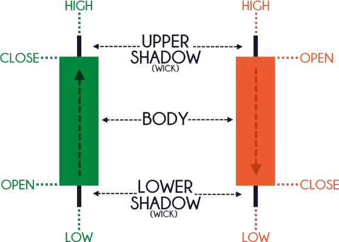
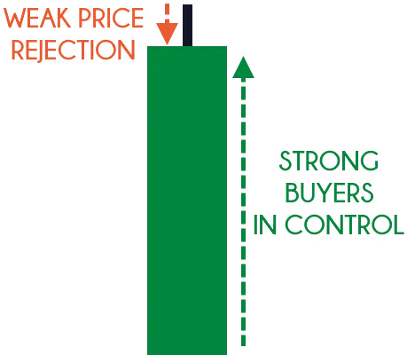
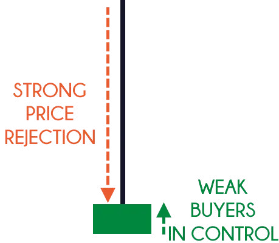
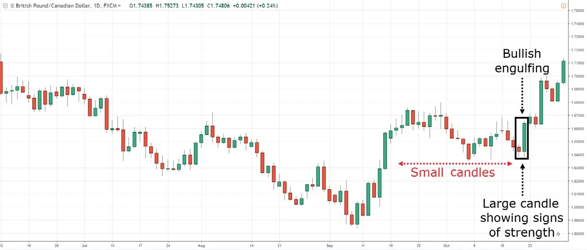
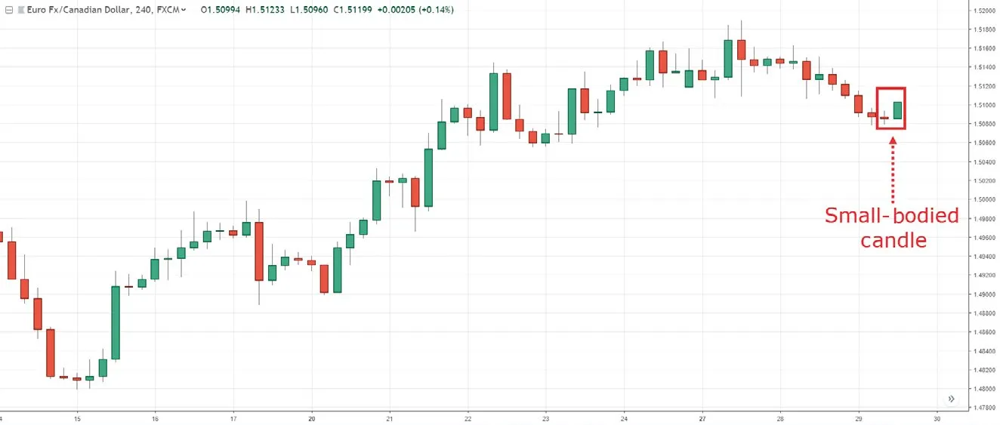

Back in my army days was when I was first learning about the financial markets, I had a lot of free time, and I didn’t want to waste it playing “Monster Hunter,” so I studied books that seemed interesting to me. At that time, I was reading stuff on value investing, financial markets, fundamental analysis, etc. However, things took a turn when one day, my army buddy was reading a book called Japanese Candlestick Charting Techniques by Steve Nison. Wow, what a game changer! It went against everything I’ve learned about speculation and the markets. And because it’s more “appealing” than reading numbers and ratios, I was hooked! I started memorizing every single candlestick pattern in the book. You know, stuff like the hammer, the shooting star, three black crows, harami, the bullish engulfing pattern, and so on. Eventually, I got burned out trying to cram all these patterns into my head. And the worst thing was, I still couldn’t make profits from any of them. So in this chapter, you’ll learn all about candlestick patterns, what they are, how they work, some information on reversal candlestick patterns, and why you don’t need to memorize a single pattern (if you follow what I’m about to teach you). Let’s begin.
It’s said that Japanese candlestick patterns originated from a Japanese rice trader called Munehisa Homma during the 1700s. Almost 300 years later, this concept was introduced to the Western world by Steve Nison, in his book, Japanese Candlestick Charting Techniques. Now, it’s likely the original ideas have been modified somewhat, leading to the candlestick patterns you see today. Anyway, that’s the brief history behind Japanese candlestick patterns. So now the question is, how do you read a Japanese candlestick chart? Let’s begin by understanding that every candlestick pattern has four data points:
Here’s an example:
Note: For a bullish candle, the open is always below the close. And for a bearish candle, the open is always above the close.
Bullish reversal candlestick patterns signify that buyers are momentarily in control. However, this doesn’t mean that you should buy immediately when you spot such a pattern because you must take the market conditions into consideration (more on that later). For now, these are five bullish reversal candlestick patterns we’ll be discussing:
Now, there are many more bullish reversal candlestick patterns out there. But you don’t need to know them all since the key focus here is just to get the gist of how to read candlestick patterns (and not to memorize any of the specific patterns). So let’s get started.
A hammer is a (one-candle) bullish reversal pattern that forms after a decline in price. Here’s how to recognize it:
And this is what a hammer means:
In short, a hammer is a bullish reversal candlestick pattern that shows rejection of lower prices.
A bullish engulfing pattern is a (two-candle) bullish reversal pattern that forms after a decline in price. Here’s how to recognize it:
And this is what a bullish engulfing pattern means:
In essence, a bullish engulfing pattern tells you that the buyers have overwhelmed the sellers and they’re now in control.
A piercing pattern is a (two-candle) reversal pattern that forms after a decline in price. Unlike the bullish engulfing pattern which closes above the previous open, the piercing pattern closes within the body of the previous candle. Thus, in terms of strength, the piercing pattern isn’t as strong as the bullish engulfing pattern. Here’s how to recognize it:
And this is what a piercing pattern means:
When I say tweezer, I don’t mean the tool you use to pick your nose hairs (although it sure looks like one). Instead, a tweezer bottom is a (two-candle) reversal pattern that occurs after a decline in price. Here’s how to recognize it:
This is what a tweezer bottom means:
In short, a tweezer bottom tells you the market has difficulty trading lower (after two attempts) and the price is likely to head higher.
A morning star is a (three-candle) bullish reversal pattern that forms after a decline in price. Here’s how to recognize it:
And this is what a morning star means:
In short, a morning star tells you that the sellers are exhausted and the buyers are momentarily in control.
Bearish reversal candlestick patterns signify that sellers are momentarily in control. However, this doesn’t mean you should sell immediately when you spot such a pattern because you must take the market conditions into consideration (more on that later). For now, these are the five bearish reversal candlestick patterns that we’ll be discussing:
A shooting star is a (one-candle) bearish reversal pattern that forms after an advance in price. Here’s how to recognize it:
And this is what a shooting star means:
In short, a shooting star is a bearish reversal candlestick pattern that shows rejection of higher prices.
A bearish engulfing pattern is a (two-candle) bearish reversal pattern that forms after an advance in price. Here’s how to recognize it:
And this is what a bearish engulfing pattern means:
In essence, a bearish engulfing pattern tells you the sellers have overwhelmed the buyers and are now in control.
A dark cloud cover is a (two-candle) reversal pattern that forms after an advance in price. Unlike the bearish engulfing pattern that closes below the previous open, the dark cloud cover closes within the body of the previous candle. Thus, in terms of strength, dark cloud cover isn’t as strong as the bearish engulfing pattern. Here’s how to recognize it:
And this is what a dark cloud cover means:
A tweezer top is a (two-candle) reversal pattern that occurs after an advance in price. Here’s how to recognize it:
This is what a tweezer top means:
In short, a tweezer top tells you the market has difficulty trading higher (after two attempts) and it’s likely to head lower.
An evening star is a (three-candle) bearish reversal pattern that forms after an advance in price. Here’s how to recognize it:
And this is what an evening star means:
In short, an evening star tells you the buyers are exhausted, and the sellers are momentarily in control.
All you need to do is ask yourself these two questions:
Look at this candlestick pattern:
Who’s in control? Well, the price closed near highs of the range, which tells you the buyers are in control. Next, look at this candlestick pattern:
Who’s in control? Although it’s a bullish candle, the sellers are actually the ones in control. Why? Because the price closed near the lows of the range and shows rejection of higher prices. So remember, if you want to know who’s in control, ask yourself, “Where did the price close relative to the range?”
This question will help you determine if there’s any strength (or conviction) behind the move. So what you want to do is compare the size of the current candle to the earlier ones. If the current candle is much larger (like two or more times larger), this tells you there’s strength behind the move.
If there’s no strength behind the move, the size of the current candle is about the same as the earlier ones. This is what I mean:
Does this make sense to you? Great! You can now read and understand any candlestick patterns like a pro. It doesn’t matter if it’s a doji, a spinning top, a harami, three white soldiers, or any other kind of pattern. You have what it takes.
Well, candlestick patterns are useful as entry triggers to help you time your entry. Recall that market structure tells you what to do. Support and resistance (or the area of value) tells you where to trade. And candlestick patterns tell you when to enter. I hope you’re starting to see the picture I’m trying to paint. But before we dive into trading strategies, there’s one more critical component I must cover, so read on.